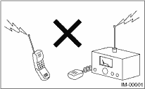
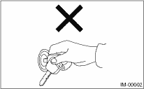
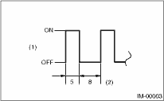

IMMOBILIZER (DIAGNOSTICS) > General Description
CAUTION:
• The airbag system wiring harness is routed near the immobilizer control module. All airbag system wiring harnesses and connectors are yellow. Do not use the electrical test equipment on these circuits.
• Be careful not to damage the airbag system wiring harness when servicing the immobilizer control module.
• While diagnostic items are being checked, do not operate radios, portable telephones, etc. which emit electromagnetic waves near or inside the vehicle.

• When the ignition switch is being turned ON or OFF while diagnostic items are being checked, do not allow keys with different ID codes be close to the ignition switch. If the ignition key is on a key holder, remove it from the key holder before performing diagnoses.

• When repeatedly turning the ignition switch to ON or OFF while diagnostic items are being checked, it should be switched in cycles of “ON” for at least 5 seconds → “OFF” for at least 8 seconds.

|
(1) |
Ignition switch position |
|
(2) |
Sec. |
• If the engine fails to start with a registered ignition key, detach the ignition key from ignition switch and wait for approx. 1 second until security indicator light begins to flash. And then start the engine again.
• Before checking the diagnostic items, obtain all keys and security ID for the vehicle to be checked possessed by owner.